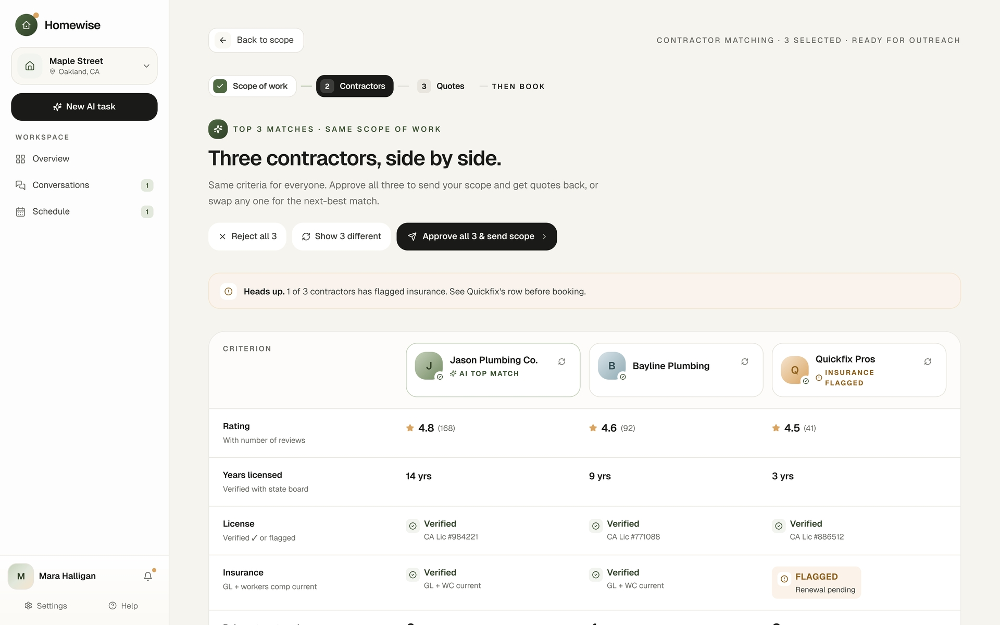
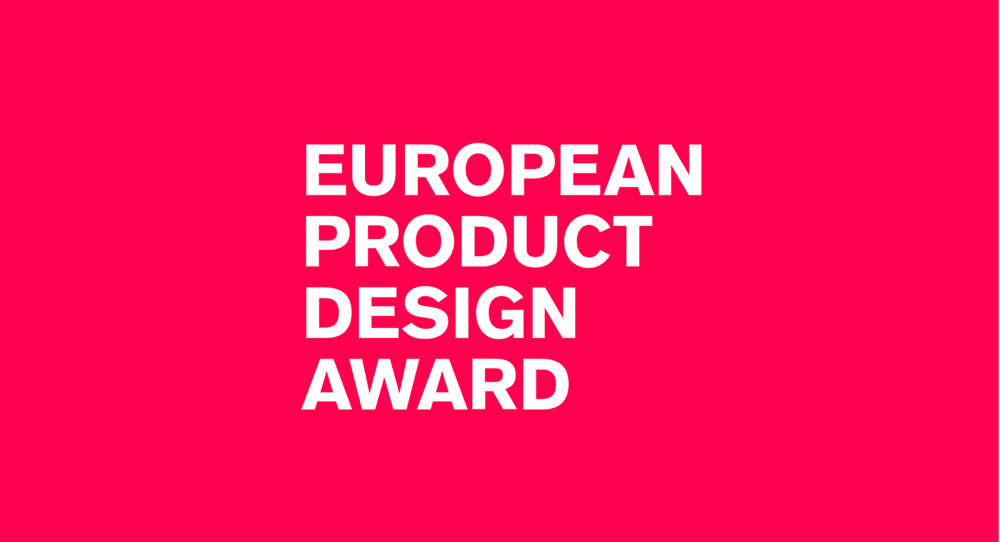
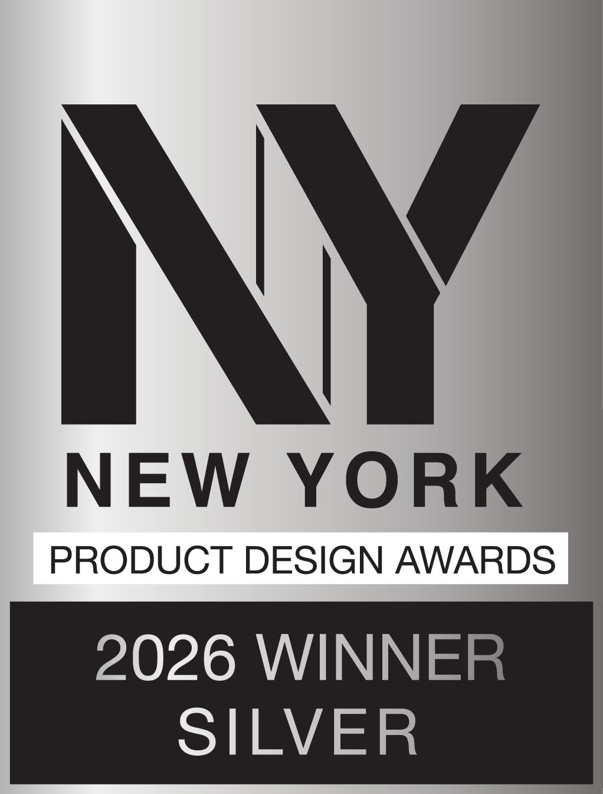
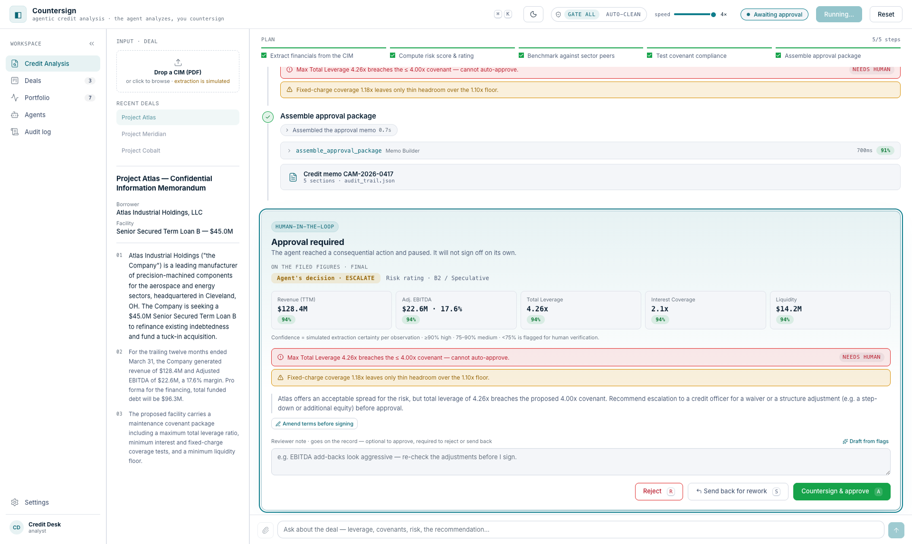
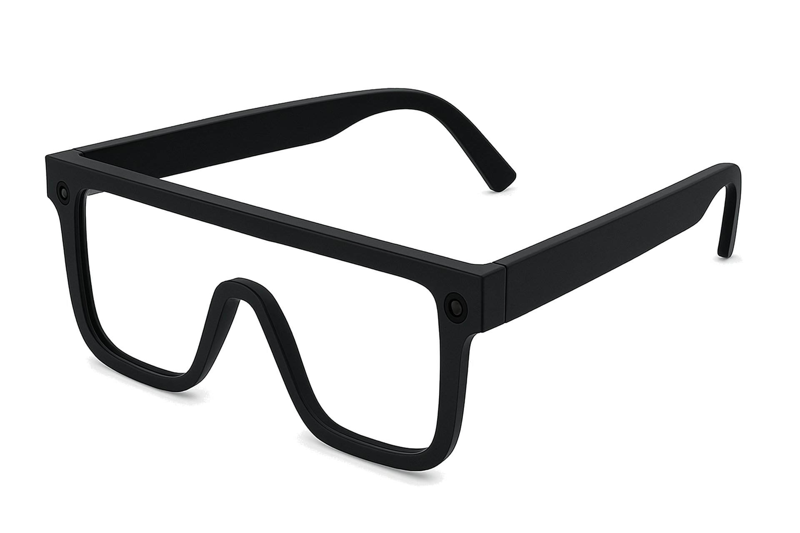
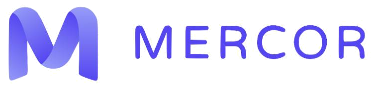
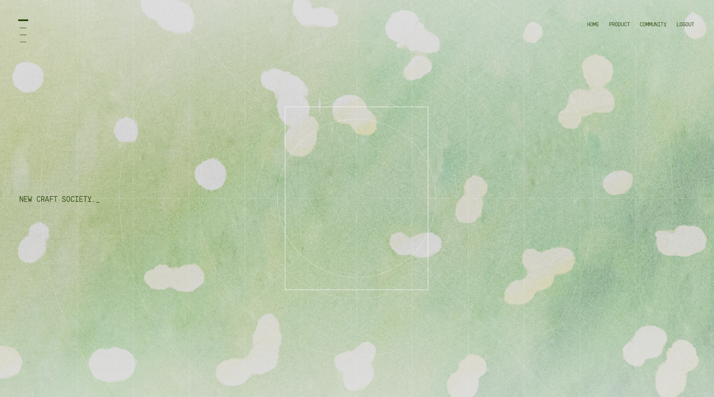

Homewise
2026AI command center for homeowners. Prototyped in code, shipped by the dev team, managing repairs from one workspace




PollenNav
2025Street level pollen guidance for safer city travel, designed for the one billion people with seasonal allergies

Litespace Coffee Chat
2023AI powered coffee chat for intentional, pressure free pairings across hybrid teams. 63% opt in, 200+ chats in month one


StoryBloom
2026Personalized bedtime app that turns how today felt into an illustrated story for kids ages 3 to 8

Countersign
2026The agent analyzes, a human countersigns. A watchable agent loop that extracts deal financials, tests covenants, and pauses at the approval gate

UNICEF NOVA
2025AR navigation system for children that balances independence and parental reassurance, tested with 20+ parents and kids

Mercor
2026Expert UX evaluation for a frontier AI lab. Reviewing AI generated interfaces and turning design critique into feedback that teaches models product taste

New Craft Society
2026A home for design process, not just finished pieces. Drop in rough work as it happens and the case study writes itself